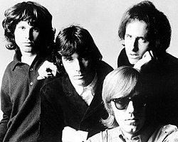

|
 |
The Doors were an American rock band formed in Los Angeles in 1965, with vocalist Jim Morrison, keyboardist Ray Manzarek, guitarist Robby Krieger, and drummer John Densmore.
They were among the most controversial and influential rock acts of the 1960s; mostly due to Morrison's lyrics and voice, along with his erratic stage persona, and the group was widely regarded as an important part of the era's counterculture
The Doors’ instrumentalists—keyboardist Manzarek, guitarist Krieger, and drummer Densmore—combined backgrounds in classical music and blues with the improvisational daring of a jazz band. It was the dark-edged eroticism of Morrison’s baritone and pseudo-poetic lyrics, however, that set the Los Angeles-based quartet apart from the prevailing hippie utopianism that pervaded West Coast rock in the late 1960s. Morrison’s early death only enhanced his reputation as the quintessential rock showman and troubled artiste for subsequent generations.
|